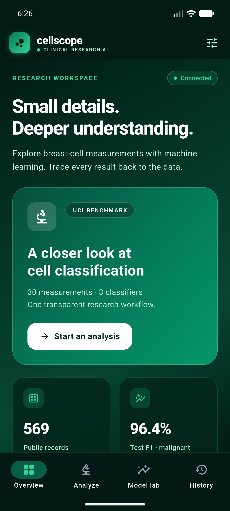
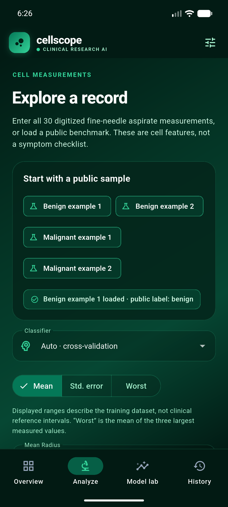
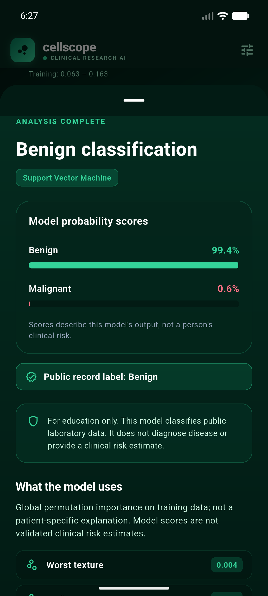
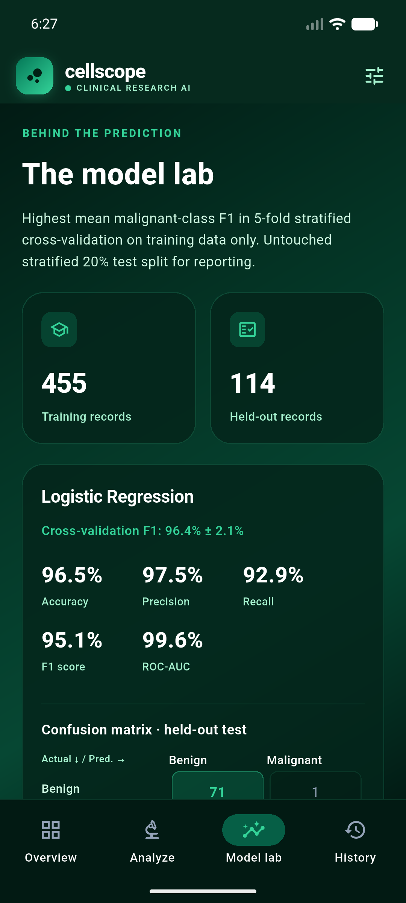
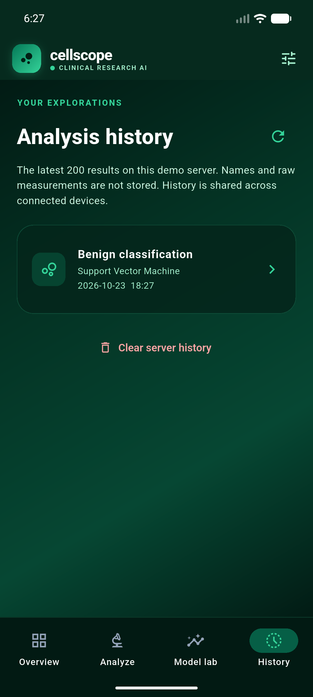

Predicting pathological disease risk across three public UCI clinical benchmarks (Wisconsin Breast Cancer, Cleveland Heart Disease, and Sylhet Diabetes) using 12 independently evaluated machine learning models (SVM, Logistic Regression, Random Forest, and XGBoost) with strict zero-leakage cross-validation and production-grade mobile deployment.
Diagnostic delays in oncology, cardiology, and metabolic disorders cause irreversible patient harm. Machine learning offers rapid risk stratification, but healthcare environments demand extreme technical rigor.
In medical diagnosis, a Type II error (predicting healthy when a patient has malignant carcinoma or coronary artery disease) is catastrophic. Algorithms must be optimized for high Recall and calibrated probabilities, not merely overall accuracy.
Clinical datasets vary dramatically: microscopic fine-needle aspirate cell geometry (30 continuous variables), hemodynamic exercise stress measurements (13 mixed continuous/categorical), and symptom survey responses (16 discrete flags).
Preprocessing before splitting causes optimistic performance bias. Moreover, models deployed without out-of-distribution detection blindly predict on physiological measurements outside valid biological ranges, endangering clinical trust.
Rigorous benchmarking across three authoritative, peer-reviewed medical datasets with SHA-256 fingerprint validation and duplicate/conflict resolution.
Digitized fine-needle aspirate (FNA) cell-nucleus microscopy measuring geometric morphological properties.
Hemodynamic, electrocardiographic, and clinical measurements for coronary artery disease risk assessment.
Diagnostic symptom survey dataset collected from Sylhet Diabetes Hospital patients in Bangladesh.
A common pitfall in applied ML is scaling or imputing data prior to cross-validation folds. CellScope enforces strict in-fold pipeline encapsulation.
Preserves positive class balance (e.g. 37.2% malignant WDBC) across train and test sets. Held-out test set is locked away until final evaluation.
Dispatches numeric features to Median Imputation + StandardScaler; dispatches categoricals to Most-Frequent Imputation + OneHotEncoder.
Standard SVM decision functions do not output true probabilities. Uses 3-fold nested CalibratedClassifierCV (Platt scaling) with preprocessing inside calibration folds.
Computes min, max, and median for every feature on the training split only, serialized to metadata schema for real-time frontend out-of-distribution warnings.
def preprocessing(dataset):
numeric = [i for i, f in enumerate(dataset.features) if f["kind"] == "number"]
categorical = [i for i, f in enumerate(dataset.features) if f["kind"] == "categorical"]
return ColumnTransformer([
("numeric", make_pipeline(SimpleImputer(strategy="median"), StandardScaler()), numeric),
("categorical", make_pipeline(SimpleImputer(strategy="most_frequent"),
OneHotEncoder(handle_unknown="ignore", sparse_output=False)), categorical),
])Evaluating linear, geometric, bagging ensemble, and gradient boosted architectures to determine the optimal bias-variance tradeoff for each clinical domain.
Constructs optimal separating hyperplanes in high-dimensional kernel space via Radial Basis Function (RBF) kernel: K(x, x') = exp(-γ ||x - x'||²) Highly resistant to overfitting in small-sample, high-feature spaces like Wisconsin Breast Cancer (30 features). Wrapped in 3-fold Platt calibration for monotonic probabilities.
Models log-odds of disease presence via sigmoid transformation: σ(z) = 1 / (1 + e-z), z = β&sup0; + ∑ βixi Trained with L-BFGS solver, max_iter=3000, and standard L2 regularization. Provides superior calibration and achieved the highest CV F1 (82.45%) on Cleveland Heart Disease.
Constructs 250 de-correlated decision trees with bootstrap aggregation (bagging) and random feature subspace selection. Configured with min_samples_leaf=2 and class_weight="balanced" to penalize minority-class misclassification.
Minimizes regularized objective using second-order Taylor expansion gradients. Fitted with 200 trees, shallow depth (max_depth=3), conservative learning rate (η=0.05), and histogram binning to prevent overfitting on small clinical samples.
CellScope never selects models based on the test set. Selection uses 5-fold stratified cross-validation evaluated exclusively on training data, prioritizing positive-class F1 score with ROC-AUC as tie-breaker.
The 80% training partition is split into 5 equal folds while strictly maintaining the ground-truth disease class ratios across every fold.
For each of the 5 iterations, imputation medians and standard scalers are computed from the 4 training folds only, then applied to the 5th validation fold.
Models are ranked by:
1. Mean CV F1 Score
2. Mean CV ROC-AUC (tie-breaker)
The winner is permanently marked as selected_model in schema.
| Disease Dataset | Selected Model | CV Mean F1 | CV F1 Std Dev | CV Mean ROC-AUC | Runner Up |
|---|---|---|---|---|---|
| Breast Cancer | SVM (Calibrated) | 96.41% | ± 1.63% | 99.45% | Logistic Regression (96.40%) |
| Heart Disease | Logistic Regression | 82.45% | ± 4.12% | 90.49% | SVM (79.18%) |
| Diabetes Risk | SVM (Calibrated) | 95.34% | ± 2.45% | 98.54% | XGBoost (94.51%) |
Measured test metrics generated from all_metrics.json on unpeeking test data.
| Disease Dataset | Classifier Architecture | CV F1 | Test Acc | Precision | Recall | F1-Score | ROC-AUC | Status |
|---|---|---|---|---|---|---|---|---|
| Wisconsin Breast Cancer 114 test samples |
Support Vector Machine | 96.41% | 97.37% | 97.56% | 95.24% | 96.39% | 99.40% | Selected |
| Logistic Regression | 96.40% | 96.49% | 97.50% | 92.86% | 95.12% | 99.60% | Benchmark | |
| Random Forest | 95.04% | 97.37% | 100.00% | 92.86% | 96.30% | 99.67% | Benchmark | |
| XGBoost (Hist Gradient) | 96.14% | 96.49% | 100.00% | 90.48% | 95.00% | 99.44% | Benchmark | |
| Cleveland Heart Disease 61 test samples |
Logistic Regression | 82.45% | 88.52% | 83.87% | 92.86% | 88.14% | 96.65% | Selected |
| Support Vector Machine | 79.18% | 88.52% | 83.87% | 92.86% | 88.14% | 96.32% | Benchmark | |
| Random Forest | 78.64% | 88.52% | 81.82% | 96.43% | 88.52% | 95.45% | Benchmark | |
| XGBoost (Hist Gradient) | 76.35% | 86.89% | 81.25% | 92.86% | 86.67% | 94.70% | Benchmark | |
| Early Stage Diabetes Risk 51 test samples |
Support Vector Machine | 95.34% | 90.20% | 100.00% | 85.71% | 92.31% | 95.89% | Selected |
| Logistic Regression | 91.49% | 82.35% | 93.33% | 80.00% | 86.15% | 92.14% | Benchmark | |
| Random Forest | 93.66% | 88.24% | 100.00% | 82.86% | 90.62% | 96.43% | Benchmark | |
| XGBoost (Hist Gradient) | 94.51% | 88.24% | 100.00% | 82.86% | 90.62% | 95.71% | Benchmark |
Evaluating True Negatives (TN), False Positives (FP), False Negatives (FN), and True Positives (TP) on held-out test data for the selected winning classifiers.
Machine learning in medicine cannot operate as an unverified black box. CellScope implements model inspection via Permutation Importance on ROC-AUC and real-time training extrapolation warnings.
Computed on training data via 5 permutation repeats. Results mirror clinical pathology: excessive thirst/urination dominate early diabetes onset, while fluoroscopy major vessel count dominates cardiovascular occlusion.
Machine learning models become dangerously unreliable when queried outside the convex hull of their training data. CellScope prevents silent failure:
Backend broadcasts training [min, max, median] for every feature via /api/schema.
If a user inputs a cholesterol of 600 or glucose outside training bounds, the UI displays an alert: "Input outside training range".
Every prediction response clearly affirms: "Demonstration only. Not a medical device or diagnostic instrument."
Production-grade separation of concerns across presentation, API gateway orchestration, and high-performance ML inference.
Implemented in Dart 3.12 with clean MVVM architecture and Riverpod state management.
Handles HTTP sanitization, payload capping, audit trail persistence, and upstream proxying.
Houses trained scikit-learn and XGBoost pipelines with asynchronous execution and Pydantic validation.
Designed specifically for clinical usability: instant benchmark preloads, real-time input validation, probability bars, and transparent confusion matrices.

Overview UI
Analyze UI
Result UI
Model Lab UI
History UIfrontend/build/app/outputs/flutter-apk/app-debug.apk ready for emulator and phone testing.
Reduced-motion support (150ms splash)
Every requirement stated in the CodeAlpha Machine Learning syllabus has been completed, tested, and empirically verified.
Presented by: Santosh Saha • CodeAlpha Machine Learning Intern
Project Repository: CodeAlpha_Disease_Prediction_From_Medical_Data • Task 4